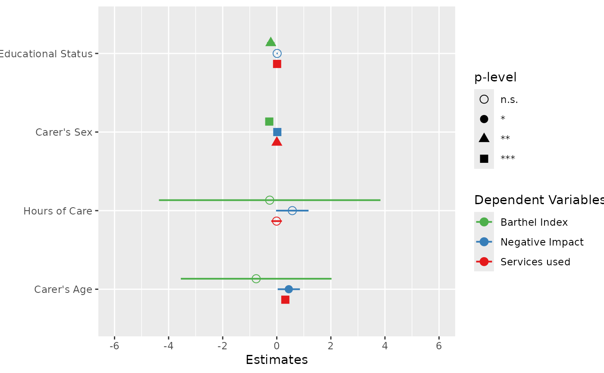
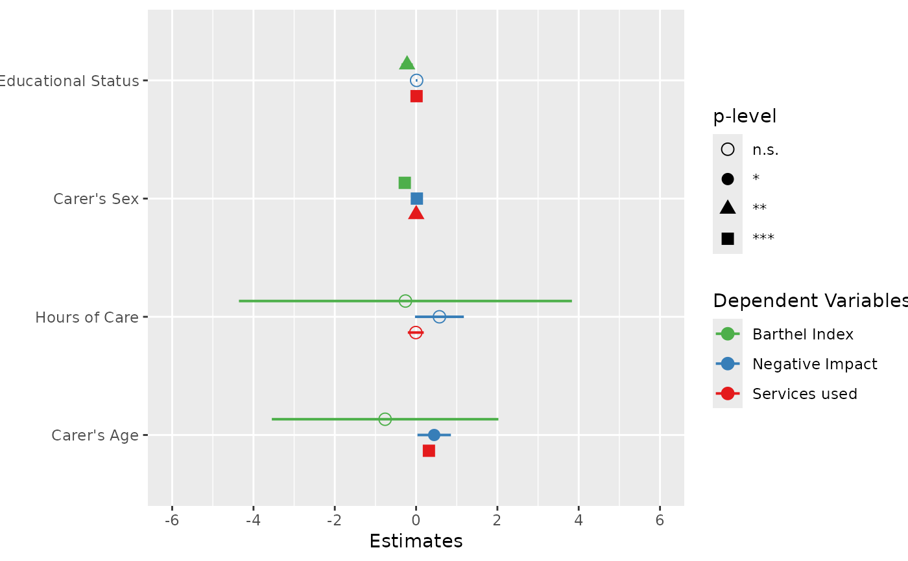

Plot and compare regression coefficients with confidence intervals of multiple regression models in one plot.
plot_models(
...,
transform = NULL,
std.est = NULL,
rm.terms = NULL,
title = NULL,
m.labels = NULL,
legend.title = "Dependent Variables",
legend.pval.title = "p-level",
axis.labels = NULL,
axis.title = NULL,
axis.lim = NULL,
wrap.title = 50,
wrap.labels = 25,
wrap.legend.title = 20,
grid.breaks = NULL,
dot.size = 3,
line.size = NULL,
value.size = NULL,
spacing = 0.4,
colors = "Set1",
show.values = FALSE,
show.legend = TRUE,
show.intercept = FALSE,
show.p = TRUE,
p.shape = FALSE,
p.threshold = c(0.05, 0.01, 0.001),
p.adjust = NULL,
ci.lvl = 0.95,
robust = FALSE,
vcov.fun = NULL,
vcov.type = c("HC3", "const", "HC", "HC0", "HC1", "HC2", "HC4", "HC4m", "HC5"),
vcov.args = NULL,
vline.color = NULL,
digits = 2,
grid = FALSE,
auto.label = TRUE,
prefix.labels = c("none", "varname", "label")
)Arguments
| ... | One or more regression models, including glm's or mixed models.
May also be a |
|---|---|
| transform | A character vector, naming a function that will be applied
on estimates and confidence intervals. By default, |
| std.est | Choose whether standardized coefficients should be used
for plotting. Default is no standardization ( |
| rm.terms | Character vector with names that indicate which terms should
be removed from the plot. Counterpart to |
| title | Character vector, used as plot title. By default,
|
| m.labels | Character vector, used to indicate the different models in the plot's legend. If not specified, the labels of the dependent variables for each model are used. |
| legend.title | Character vector, used as legend title for plots that have a legend. |
| legend.pval.title | Character vector, used as title of the plot legend that
indicates the p-values. Default is |
| axis.labels | Character vector with labels for the model terms, used as
axis labels. By default, |
| axis.title | Character vector of length one or two (depending on the
plot function and type), used as title(s) for the x and y axis. If not
specified, a default labelling is chosen. Note: Some plot types
may not support this argument sufficiently. In such cases, use the returned
ggplot-object and add axis titles manually with
|
| axis.lim | Numeric vector of length 2, defining the range of the plot
axis. Depending on plot-type, may effect either x- or y-axis. For
Marginal Effects plots, |
| wrap.title | Numeric, determines how many chars of the plot title are displayed in one line and when a line break is inserted. |
| wrap.labels | Numeric, determines how many chars of the value, variable or axis labels are displayed in one line and when a line break is inserted. |
| wrap.legend.title | numeric, determines how many chars of the legend's title are displayed in one line and when a line break is inserted. |
| grid.breaks | Numeric value or vector; if |
| dot.size | Numeric, size of the dots that indicate the point estimates. |
| line.size | Numeric, size of the lines that indicate the error bars. |
| value.size | Numeric, indicates the size of value labels. Can be used
for all plot types where the argument |
| spacing | Numeric, spacing between the dots and error bars of the plotted fitted models. Default is 0.3. |
| colors | May be a character vector of color values in hex-format, valid
color value names (see
|
| show.values | Logical, whether values should be plotted or not. |
| show.legend | For Marginal Effects plots, shows or hides the legend. |
| show.intercept | Logical, if |
| show.p | Logical, adds asterisks that indicate the significance level of estimates to the value labels. |
| p.shape | Logical, if |
| p.threshold | Numeric vector of length 3, indicating the treshold for
annotating p-values with asterisks. Only applies if
|
| p.adjust | Character vector, if not |
| ci.lvl | Numeric, the level of the confidence intervals (error bars).
Use |
| robust | Logical, shortcut for arguments |
| vcov.fun | Character vector, indicating the name of the |
| vcov.type | Character vector, specifying the estimation type for the
robust covariance matrix estimation (see |
| vcov.args | List of named vectors, used as additional arguments that
are passed down to |
| vline.color | Color of the vertical "zero effect" line. Default color is inherited from the current theme. |
| digits | Numeric, amount of digits after decimal point when rounding estimates or values. |
| grid | Logical, if |
| auto.label | Logical, if |
| prefix.labels | Indicates whether the value labels of categorical variables
should be prefixed, e.g. with the variable name or variable label. See
argument |
Value
A ggplot-object.
Examples
data(efc)
# fit three models
fit1 <- lm(barthtot ~ c160age + c12hour + c161sex + c172code, data = efc)
fit2 <- lm(neg_c_7 ~ c160age + c12hour + c161sex + c172code, data = efc)
fit3 <- lm(tot_sc_e ~ c160age + c12hour + c161sex + c172code, data = efc)
# plot multiple models
plot_models(fit1, fit2, fit3, grid = TRUE)
 # plot multiple models with legend labels and
# point shapes instead of value labels
plot_models(
fit1, fit2, fit3,
axis.labels = c(
"Carer's Age", "Hours of Care", "Carer's Sex", "Educational Status"
),
m.labels = c("Barthel Index", "Negative Impact", "Services used"),
show.values = FALSE, show.p = FALSE, p.shape = TRUE
)

# plot multiple models from nested lists argument
all.models <- list()
all.models[[1]] <- fit1
all.models[[2]] <- fit2
all.models[[3]] <- fit3
plot_models(all.models)
# plot multiple models with legend labels and
# point shapes instead of value labels
plot_models(
fit1, fit2, fit3,
axis.labels = c(
"Carer's Age", "Hours of Care", "Carer's Sex", "Educational Status"
),
m.labels = c("Barthel Index", "Negative Impact", "Services used"),
show.values = FALSE, show.p = FALSE, p.shape = TRUE
)

# plot multiple models from nested lists argument
all.models <- list()
all.models[[1]] <- fit1
all.models[[2]] <- fit2
all.models[[3]] <- fit3
plot_models(all.models)
 # plot multiple models with different predictors (stepwise inclusion),
# standardized estimates
fit1 <- lm(mpg ~ wt + cyl + disp + gear, data = mtcars)
fit2 <- update(fit1, . ~ . + hp)
fit3 <- update(fit2, . ~ . + am)
plot_models(fit1, fit2, fit3, std.est = "std2")
# plot multiple models with different predictors (stepwise inclusion),
# standardized estimates
fit1 <- lm(mpg ~ wt + cyl + disp + gear, data = mtcars)
fit2 <- update(fit1, . ~ . + hp)
fit3 <- update(fit2, . ~ . + am)
plot_models(fit1, fit2, fit3, std.est = "std2")